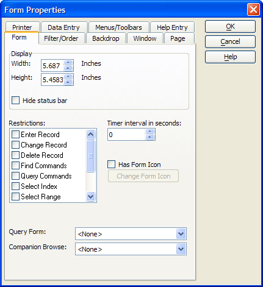
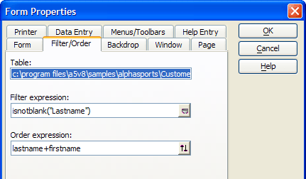
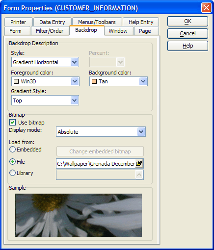
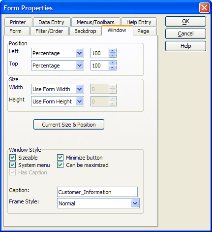
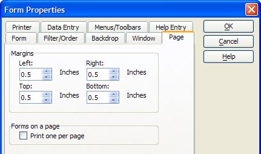
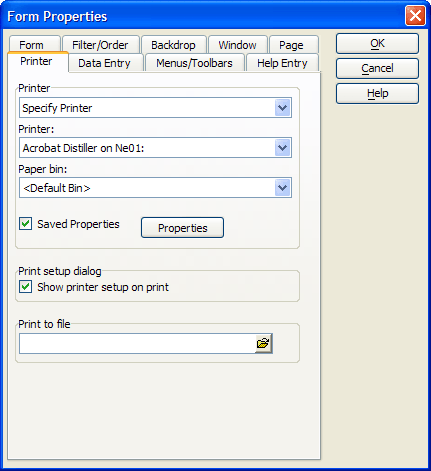
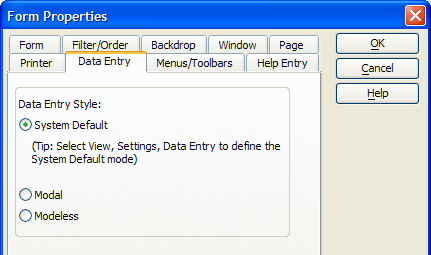
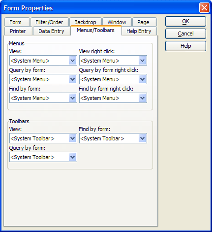
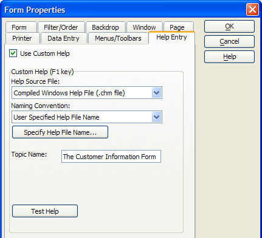

Form Properties
|
Item |
Description |
|
Width |
The width of the form in the unit of measure set in View > Settings > System > Layouts. :formname.form_width as N |
|
Height |
The width of the form in the unit of measure set in View > Settings > System > Layouts. :formname.form_height as N |
|
Hide Status Bar |
When checked, the Status Bar will not appear at the bottom of the form. :formname.disable_status_bar as L |
|
Restrictions |
The user's ability to switch to browse view. :formname.restrict_browse as L The user's ability to enter edit records. :formname.restrict_change as L The user's ability to continuously enter new records. :formname.restrict_continuous_enters as L The user's ability to delete records. :formname.restrict_delete as L The user's ability to open or edit layouts. :formname.restrict_edit as L The user's ability to enter new records. :formname.restrict_enter as L The user's ability to use the function in the Find menu. :formname.restrict_find as L The user's ability to use the functions in Query menu. :formname.restrict_index as L The user's ability to use the first, previous, next, and last record commands. :formname.restrict_navigation as L The user's ability to use query commands. :formname.restrict_query as L The user's ability to use select a range of records. :formname.restrict_range as L |
|
Timer Interval |
Sets the timer interval. :formname.timer_interval as N |
|
Form Icon |
Sets the form icon. :formname.window.icon as C |
|
Query Form |
Sets the form used in Query by Form. :formname.query_form as C |
|
Companion Browse |
Sets the browse displayed by pressing F8. :formname.companion_browse as C |

|
Item |
Description |
|
Table |
The name of the table (or primary table in the case of set) that the form is bound to. |
|
Filter Expression |
An expression that selects records from the table or set. :formname.topparent:tables:tablename.filter_expression as C See also: <OBJECT>.BASEQUERYRUN() and CURRENT_FILTER_EXPN(). |
|
Order Expression |
An expression that orders selected records. :formname.topparent:tables:tablename.order_expression as C See also: <OBJECT>.BASEQUERYRUN() and CURRENT_ORDER_EXPN(). |

|
Item |
Description |
|
Background Style |
The fill color mode and translucency of the form's background. :formname.Background_style as C |
|
Fill |
The style and color(s) of the form's background. :formname.fill.backcolor as C :formname.fill.forecolor as C :formname.fill.style as C |
|
Use Bitmap |
When checked, allows a bitmap image to be used as the form's background. :formname.use_bitmap as L |
|
Display Mode |
If Bitmap is checked, sets the way the bitmap is displayed: "Absolute" (actual size), "Stretch" (fill the background, with potentially unequal scaling in horizontal and vertical dimensions), or "Best Fit" (largest size without distortion of the image). :formname.bitmap.style as C |
|
Embedded |
The name of the embedded image. |
|
File |
The name of a bitmap image file to use as a background. :formname.bitmap.filename as C |
|
Library |
The name of the library image. :formname.bitmap.library as C |

|
Item |
Description |
|
Left, Top |
Sets the left and top coordinates of the window. :formname.window.left as N :formname.window.top as N |
|
Width, Height |
Sets the width and height dimensions of the window. :formname.window.width as N :formname.window.height as N |
|
Mode and Value |
If the mode of any of the Position or Size values is set to "Percentage", then the value is interpreted as a percentage of the Alpha Anywhere window. In all other cases, the values are in inches. If the mode of any of the Position or Size values is set to "Percentage", then the property setting is then "Percent". If the mode is set to "Inches" or "Cm", the value of the property setting is then "Absolute". If the mode is set to "Default, the value of the property setting is "Default". In this case the size of the form is set by the size of the form in the design window. If the mode is set to "Use Form Width" or "Use Form Height", the value of the property setting is "Form". In this case the size of the form is set by the size of the design window. :formname.window.left_mode as C :formname.window.top_mode as C :formname.window.width_mode as C :formname.window.height_mode as C |
|
Sizeable |
When checked, the user can resize the form window. :formname.window.allow_resize as L |
|
System Menu |
When checked, there is a system menu in the upper left corner of the form window. :formname.window.has_system_menu as L |
|
Minimize Button |
When checked, there is a minimize button in the upper right corner of the form window. :formname.window.allow_minimize as L |
|
Maximize Button |
When checked, there is a maximize button in the upper right corner of the form window. :formname.window.allow_maximize as L |
|
Has Caption |
When checked, the caption field is enabled. :formname.window.has_caption as L |
|
Caption |
The name of the form. :formname.window_title as C |
|
Frame Style |
Sets the style of the window to "Form" (modeless), "Dialog" (modal), or "Tool" (?). :formname.window.window_style as C |

|
Item |
Description |
|
Left |
The size of the left margin when printing the form. :formname.printer.left as N |
|
Right |
The size of the right margin when printing the form. :formname.printer.right as N |
|
Top |
The size of the top margin when printing the form. :formname.printer.top as N |
|
Bottom |
The size of the bottom margin when printing the form. :formname.printer.bottom as N |
|
Forms on a page |
Whether it is allowed to print more than one form on a page. :formname.print_one_per_page as L |

|
Item |
Description |
|
Printer Selection |
Enables and disables the Printer drop-down list box. |
|
Printer |
Which printer to use. :formname.printer.to_printer as C |
|
Paper bin |
Which paper bin on the printer to use. :formname.printer.paper_bin as C |
|
Saved Properties |
Refer to Setting Printer Options at Run Time. |
|
Show printer setup |
Whether the user should see the Print Setup dialog. :formname.printer.show_setup as L |
|
Print to file |
The name of the print file to create. :formname.printer.to_file as C |

|
Item |
Description |
|
Data Entry Style |
Whether the form should use the "System default", "Modal", or "Modeless" data entry styles. :formname.data_entry_style as C |

Also refer to Right-Click Menus and Changing Custom Menus at Runtime.
|
Item |
Description |
|
View Menu |
The standard menu to display. :formname.drop_down_menu as C |
|
View Right Click Menu |
The standard right click menu to display. :formname.right_click_menu as C |
|
Query by Form Menu |
The menu to display in Query by Form mode. :formname.query_by_form_drop_down_menu as C |
|
Query by Form Right Click Menu |
The right click menu to display in Query by Form mode. :formname.query_by_form_right_click_menu as C |
|
Find by Form Menu |
The menu to display in Find by Form mode. :formname.find_by_form_drop_down_menu as C |
|
Find by Form Right Click Menu |
The right click menu to display in Find by Form mode. :formname.find_by_form_right_click_menu as C |
|
View Toolbar |
The standard toolbar to display. :formname.toolbar as C |
|
Query by Form Toolbar |
The toolbar to display in Find by Form mode. :formname.query_by_form_toolbar as C |
|
Find by Form Toolbar |
The toolbar to display in Find by Form mode. :formname.find_by_form_toolbar as C |

|
Item |
Description |
|
Use Custom Help |
Enables other fields on the tab. |
|
Help Source File |
Enables other fields on the tab. |
|
Naming Convention |
Enables other fields on the tab. |
|
Help File Name |
The path to and name of the compiled help file that contains the help topics. :formname.fieldname.help_filename as C |
|
Help Window Title |
The title of the topic in an Alpha Anywhere help file. |
|
Chapter Name |
Included in the help filename. :formname.fieldname.chapter_name:help_filename as C |
|
Topic Name |
The name of the help topic in a compiled help file. :formname.help_topic as C |

See Also
Setting Form Properties, Form Functions and Methods, Modal and Modeless Data Entry